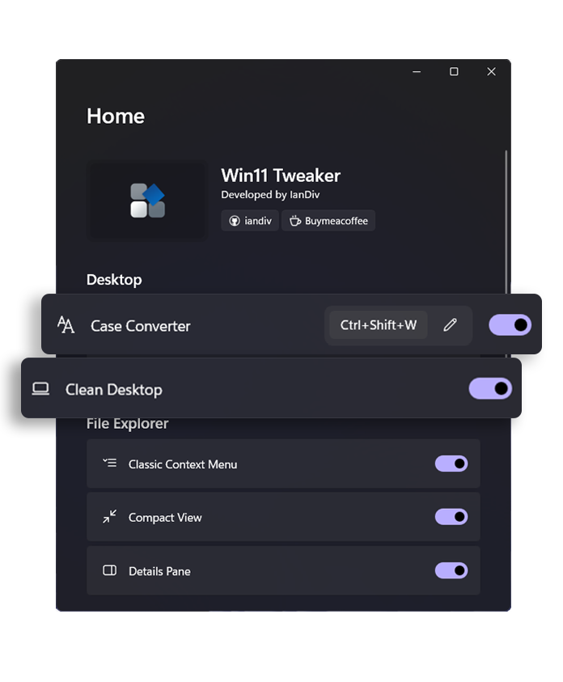

A Powerful Tool for Personalizing and Enhancing Windows 11
28,288 downloads
Personalize and Enhance
your Windows 11
A free and open-source tool designed to customize and enhance Windows 11
by enabling or disabling various system features with ease. It provides a user-friendly
interface that allows users to tweak settings.

Features
Enhances Windows 11 with key features.
New
Case Converter Convert text to different text cases
New
Clean Desktop Hide icons by double-clicking on the desktop
New
Disable Background Apps Prevent apps from running in the background
Classic Context Menu Bring back the Classic Context Menu
Compact View Enable or disable compact view in File Explorer
Details Pane Add Details Pane to File Explorer's context menu
Disable Web Search Disable Start Meny web search in the Windows
Lock Screen Disable the Windows lock screen and go directly to login
Print Screen Sound Enable sound when using the Print Screen key